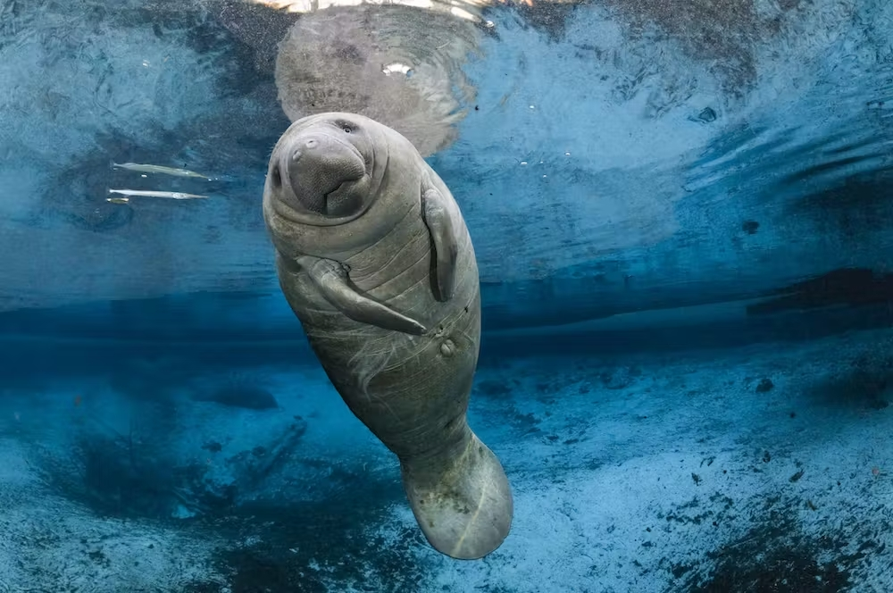
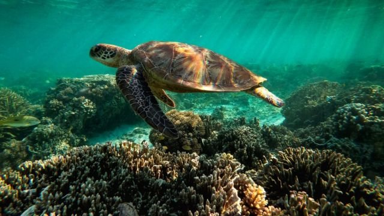
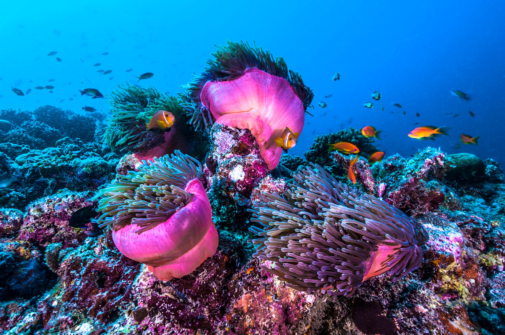
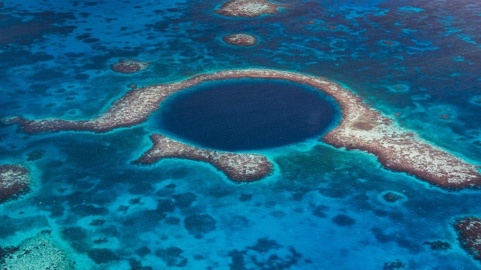

The Belize Barrier Reef is one of the most spectacular natural wonders of the world, boasting a
stunning array of marine biodiversity and vibrant coral reefs. Located off the coast of Belize, it
stretches over 190 miles and is the second-largest coral reef system in the world after the Great Barrier
Reef in Australia. The Belize Barrier Reef is home to over 500 species of fish, 65 species of coral, and
countless other marine creatures.
The reef is a popular destination for snorkelers and scuba divers, who come from all over the world to
explore its diverse underwater landscapes. The reef is home to several unique and fascinating dive sites,
such as the Blue Hole, a giant sinkhole that drops down over 400 feet and is surrounded by colorful coral formations.
Other popular sites include Shark Ray Alley, where visitors can swim with friendly nurse sharks and southern stingrays,
and the Hol Chan Marine Reserve, which is home to a variety of colorful fish and sea turtles.
Despite its natural beauty, the Belize Barrier Reef faces a number of threats, including overfishing, pollution,
and climate change. Efforts are underway to protect the reef and preserve its fragile ecosystem, such as establishing
marine protected areas and promoting sustainable tourism practices. The Belize Barrier Reef is a true wonder of the natural
world and a vital part of our planet's biodiversity, and it is up to all of us to work together to ensure its continued survival
for generations to come.
The Belize Barrier Reef is a geological marvel located off the coast of Belize in Central America. The reef system
is part of the larger Mesoamerican Barrier Reef System, which runs from Mexico down to Honduras, and is the largest coral
reef system in the Western Hemisphere. The Belize Barrier Reef itself stretches for over 190 miles along the Belizean coast and
is made up of numerous individual coral reefs and islands. The reef system is located on the edge of the Yucatan Peninsula, where the shallow waters of the Caribbean Sea meet the deeper waters of
the Atlantic Ocean. This geological location provides a unique environment for the growth of coral reefs, as the warm waters of the Caribbean
provide ideal conditions for coral growth, while the upwelling of cooler water from the Atlantic brings vital nutrients to the reef ecosystem.
Home for endangered spieces - DUGONG : Dugongs are primarily herbivorous,
grazing on up to 30kg of seagrass a day. They eat both day and night, locating their food with the help of coarse, sensitive
bristles on their upper lip.
These large creatures are found in warm water around coastlines, both north and south of the equator. They inhabit both
freshwater and brackish water, where seagrass beds can be found. Australia hosts the largest number of Dugongs, with the Reef providing
an important feeding ground.
Sea Turtles: There are seven different types of sea turtle that are endangered across the world. Two types
that are endangered and live in the Belize Barrier Reef are the Leatherback Turtle, and the Olive Ridley Turtle.
Extreamly rare creatures : The Great Barrier Reef, located off the coast of Australia, is home
to a vast array of marine life, including many species of corals. Among these, there are several rare and unique species
of coral that can be found in the Great Barrier Reef. These corals are often elusive and difficult to find, but they play
an important role in the ecosystem of the reef. Some of the rare corals found in the Belize Barrier Reef include the Black
Coral, the Blue Coral, and the Bubble Coral. The Black Coral is a slow-growing species that can live for hundreds of
years and is often found in deeper waters. The Blue Coral is a beautiful and delicate species that is typically found
in shallow waters and is known for its vibrant blue color. The Bubble Coral is a unique species that can be identified
by its spherical shape and bubbly appearance.
Arial view : An aerial view of the Belize Barrier Reef is truly breathtaking, revealing the vast expanse of the world's
largest coral reef system in all its glory. From above, the turquoise waters surrounding the reef contrast with the vivid colors of the coral formations, creating a stunning mosaic
of shapes and shades. The aerial view also offers a unique perspective on the reef's complex and diverse ecosystem, showcasing the different habitats and marine life that call the reef home.
It's not uncommon to spot marine creatures like turtles, sharks, and rays from above, giving a glimpse into the thriving underwater world of the reef.
Protecting the Belize Barrier Reef
Reduce carbon emissions: Climate change is one of the biggest threats to the Great Barrier Reef.
By reducing your carbon footprint, you can help slow the rate of climate change and reduce its impacts
on the reef.
Reduce plastic waste: Plastic pollution is a major problem for marine life, including the coral
and fish that call the Belize Barrier Reef home. By reducing your use of single-use plastics and properly
disposing of plastic waste, you can help keep the reef clean and healthy.
Support sustainable tourism: Tourism is an important source of income for the communities that
rely on the Great Barrier Reef. By choosing sustainable tourism options that prioritize conservation
and responsible practices, you can help support the local economy while also protecting the reef.
Support conservation efforts: There are many organizations working to protect the Great Barrier Reef,
including the Belize Barrier Reef Foundation, the Belize Barrier Reef Marine Park Authority, Reef Check Australia,
and Citizens of the Great Barrier Reef. By supporting these organizations through donations or volunteer work, you can
help fund conservation efforts and contribute to the protection of the reef.
Educate others: Spreading awareness about the importance of the Belize Barrier Reef and the threats
it faces can help inspire others to take action to protect it. By sharing information and resources
with friends, family, and your community, you can help raise awareness and build support for conservation efforts.